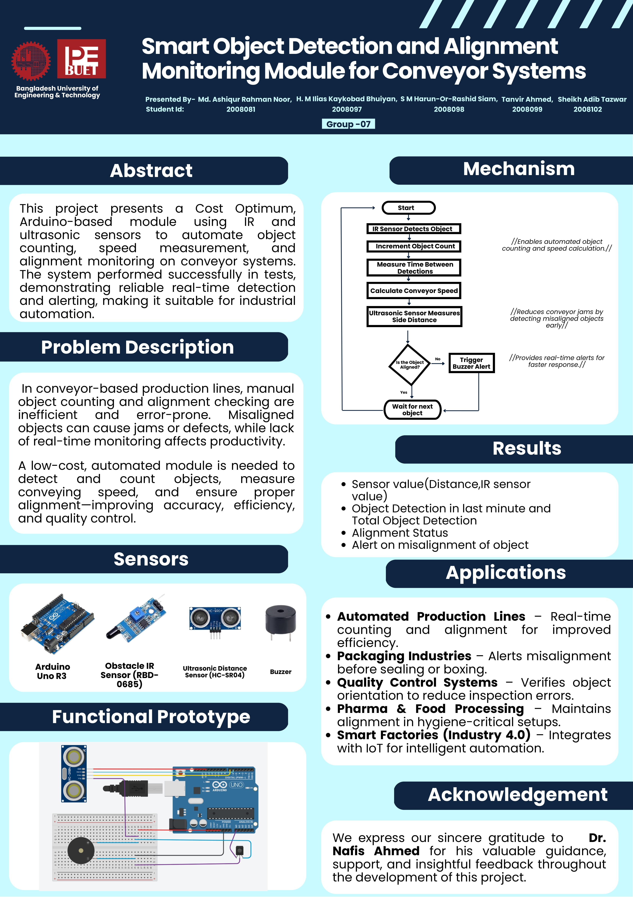

Manual object counting and alignment checking on conveyor belts is error-prone and inefficient. Misaligned objects can cause jams, packaging defects, or production delays. A sensor-based automated system is needed to detect objects, monitor their alignment, and alert operators only when corrective action is necessary.
| Device / Component | Task / Function |
|---|---|
| IR Sensor Module | Detects and counts objects |
| Ultrasonic Distance Sensor (HC-SR04) | Measures lateral alignment of objects |
| Buzzer | Alerts only when misalignment is detected |
| Microcontroller | Reads sensors, logic, and uploads data |

/* Object Detection and Alignment Monitoring System */
const int obstaclePin = A0;
const int ledPin = 13;
const int trigPin = 7;
const int echoPin = 6;
const int buzzerPin = 8;
unsigned long lastObjectCountReset = 0;
unsigned long lastSensorPrint = 0;
int objectCountLastMinute = 0;
int totalObjectCount = 0;
void setup() {
Serial.begin(9600);
pinMode(obstaclePin, INPUT);
pinMode(ledPin, OUTPUT);
pinMode(trigPin, OUTPUT);
pinMode(echoPin, INPUT);
pinMode(buzzerPin, OUTPUT);
digitalWrite(buzzerPin, LOW);
}
void loop() {
unsigned long currentTime = millis();
int sensorValue = analogRead(obstaclePin);
if (sensorValue >= 989) {
objectCountLastMinute++;
totalObjectCount++;
digitalWrite(ledPin, HIGH);
delay(50);
digitalWrite(ledPin, LOW);
}
// Sonar Reading
long duration;
float distanceCm;
digitalWrite(trigPin, LOW); delayMicroseconds(2);
digitalWrite(trigPin, HIGH); delayMicroseconds(10); digitalWrite(trigPin, LOW);
duration = pulseIn(echoPin, HIGH, 30000);
distanceCm = duration * 0.034 / 2;
// Alignment Check
String alignmentStatus = "";
if (distanceCm >= 6 && distanceCm <= 8) {
alignmentStatus = "alignment ✅";
digitalWrite(buzzerPin, HIGH);
} else if (distanceCm > 8 && distanceCm <= 10) {
alignmentStatus = "misaligned ❌";
digitalWrite(buzzerPin, LOW);
} else if (distanceCm > 10) {
alignmentStatus = "no objects nearby ⚠️";
digitalWrite(buzzerPin, HIGH);
} else {
digitalWrite(buzzerPin, HIGH);
}
// Print Every 1 Second
if (currentTime - lastSensorPrint >= 989) {
Serial.print("Obstacle Sensor: ");
Serial.print(sensorValue);
Serial.print(" | Count in Last Min: ");
Serial.print(objectCountLastMinute);
Serial.print(" | Total Count: ");
Serial.println(totalObjectCount);
Serial.print("Sonar Distance: ");
Serial.print(distanceCm);
Serial.print(" cm → ");
Serial.println(alignmentStatus);
lastSensorPrint = currentTime;
}
// Reset objectCountLastMinute every 60s
if (currentTime - lastObjectCountReset >= 60000) {
objectCountLastMinute = 0;
lastObjectCountReset = currentTime;
}
delay(50);
}